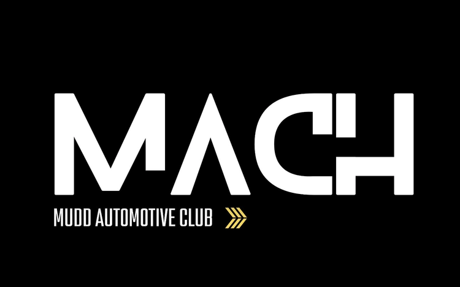
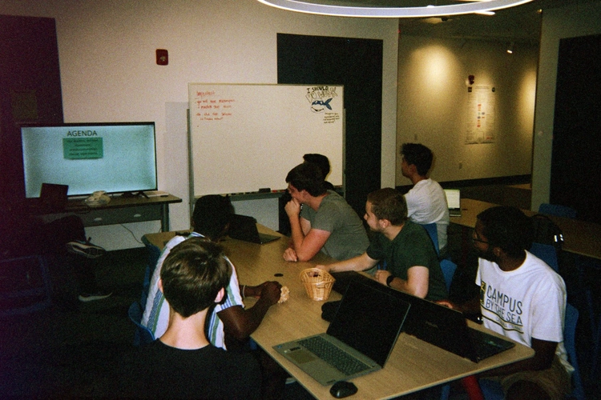
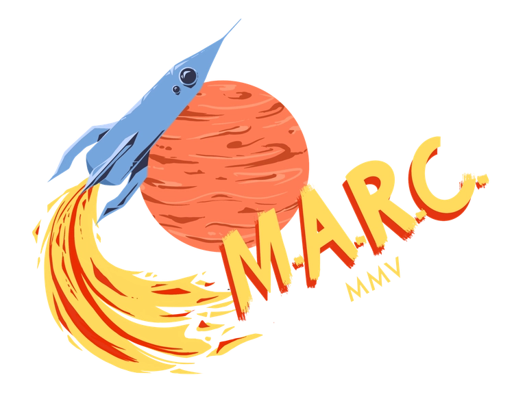
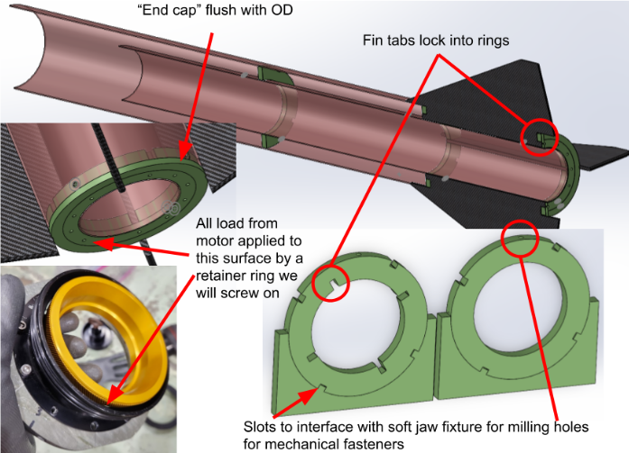
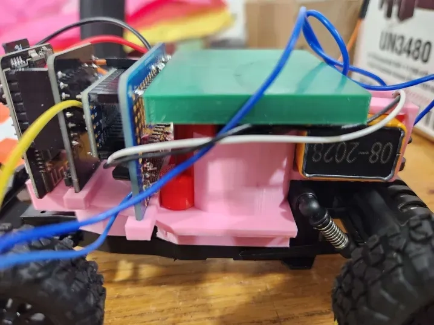
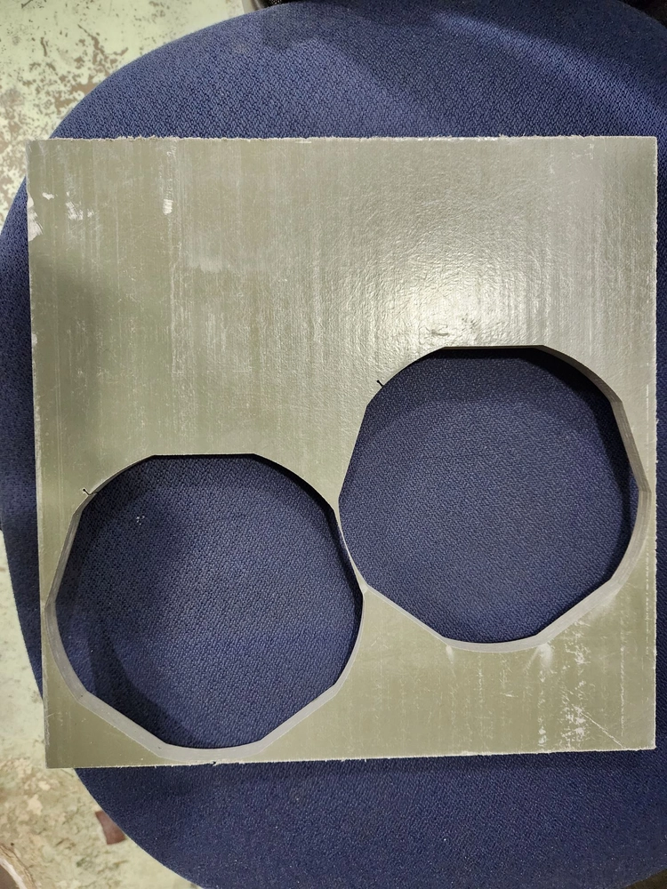
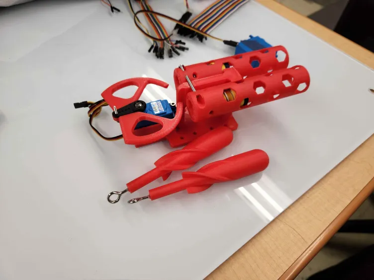
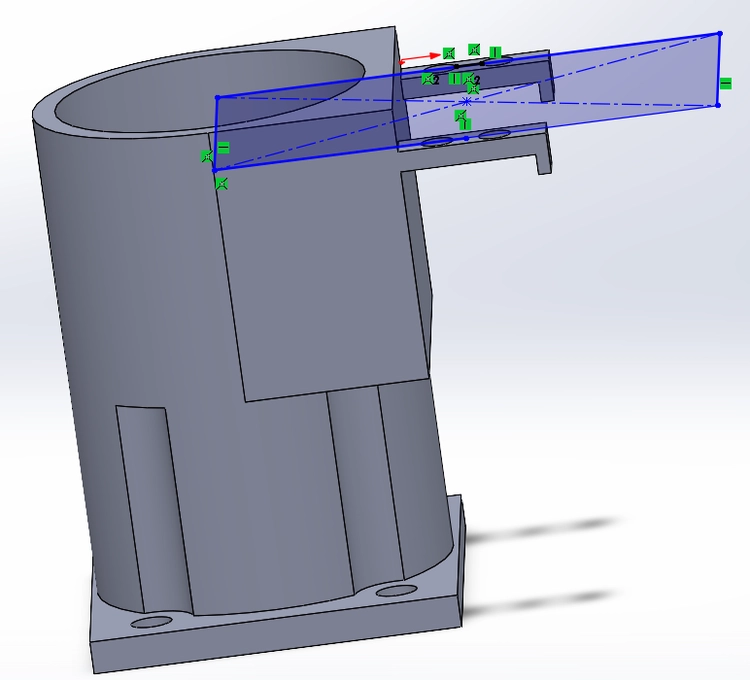

Engineering Club Projects
Besides growing in my faith and friendships, perhaps the best part of college has been the opportunities to dive into awesome, student-led engineering projects. It’s a genuine privilege and joy to build on the work of students and faculty who started clubs long before I began attending Mudd, and I hope to contribute to the legacy of these clubs not only for my own engineering experience, but especially to provide opportunities for future students. The following projects have enabled me to explore both sides of that hope.
Mudd Automotive Club: Hybrids
I’m a co-founder and the vice president of Mudd Automotive Club: Hybrids (MACH), Mudd’s first automotive engineering endeavor, where students are building a massive hybrid go-kart from various scrapped ATV parts, angle iron, and steel tubing. Follow us on Instagram to stay posted on our latest progress!

Frame Construction
Some of the most fun I’ve had at Mudd has been welding and machining frame pieces for MACH’s go-kart. It’s put all of my machine shop skills to the test! Before and while building the frame, we’ve had to calculate positions for crucial structural components, especially where the wheels attach, e.g. the shock tower for the rear axle.

Electrical Research
While it’s currently on the back-burner, I’ve helped lead and brainstorm ideas for an electrical subteam within MACH, particularly to explore the possibily of designing our own regenerative braking system.

Establishing MACH - A Bumpy Ride
As far as we’ve come, MACH had very humble beginnings. We’ve gradually accumulated the materials we now have for the design we’re implementing, after five semesters of searching and tons of ideation and down-selection.

Mudd Amateur Rocketry Club
I’m also the associate lead of Mudd Amateur Rocketry Club (MARC)’s Structures Team, overseeing the design and assembly of a rocket for the Friends of Amateur Rocketry 2025 national competition. Check out our website and follow us on Instagram!

Gladius III Design & Validation
Following an unfortunate failure during the FAR24 launch, this year we’re dramatically redesigning our rocket’s structural components. After spearheading the planning of a new approach to assembling the rocket’s aft airframe and running preliminary SolidWorks finite element analysis (FEA), I’ve been in correspondence with the pros at Second Order Effects, who had previously offered to review our work.

Gladius II Competition Launch
Two years of design and assembly, following a number of lessons learned from a previous failed launch, culminated in this moment. Things went wrong but it was a great learning experience!
Custom Remote-Control Rover & Parachute
The Structures Team was hoping to pursue a FAR24 bonus competition objective by deploying a remote-control rover. I created a harness to mount PCBs and a parachute onto a stripped-down RC car, and built the parachute itself.

Gladius II Research & Fabrication
In my freshman and sophomore years at Mudd, I contributed to materials selection research for and assembly of MARC’s second competition rocket. We aimed for a goal of 20,000 ft, which posed a great challenge for our Cesaroni O3400 motor, so we took many steps to reduce component masses.

Mudd Robosub Club
Additionally, I lead the Mechanical Team in Mudd Robosub Club (MuddSub), guiding the design, fabrication, and testing of mechanical subsystems for two autonomous underwater vehicles (AUVs) that will be deployed at the international Robosub 2025 competition. Take a look at our website and check out our Instagram to track our progress!
Torpedo Launcher Prototype
This year, I’ve led the redesigning of a long-defunct torpedo launcher subsystem. Our next steps are to refine this prototype, then move on to finishing touches for the AUVs it and other subsystems will attach to.

Marker Dropper Prototype
In my sophomore year, I helped design and wet test a dropper prototype, a system capable of staggered deployment of markers for a competition objective.

AUV Fabrication
In my freshman year, I helped machine the bellypan for MuddSub’s first AUV, Alfie, and modified CAD for its new AUV, Crush. While neither AUV’s mechanical/structural components have been touched in a couple years, I’ll be helping change that this year! As soon as that happens, we’ll have not one, but two AUVs capable of traversing the RoboSub competition course.